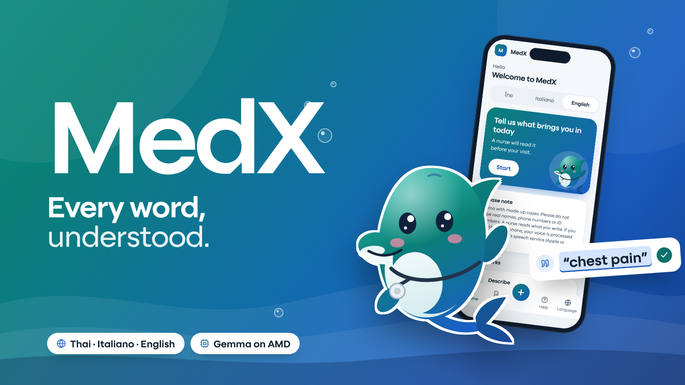
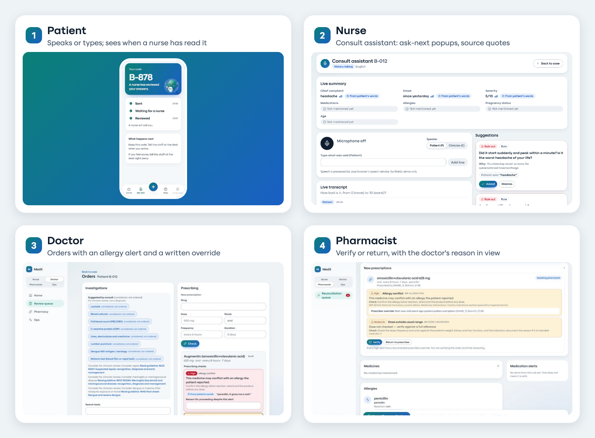

MedX: Multilingual AI Copilot for Clinic Visits
Research prototype · synthetic data only · Track 2 Health & Wellbeing · AMD Developer Hackathon ACT III
MedX · Situation Analysis
Executive summary
Without a shared language, communication errors become safety events.
The problem
49.1%
of adverse events in limited-English patients involved physical harm, vs 29.5% for English speakers.
Divi et al., Int J Qual Health Care 2007 (6 US hospitals)
Our answer
1 journey
Patient voice intake, nurse and doctor see fields linked to the patient's own words, a pharmacist verifies. People decide.
Research prototype, synthetic data only
The proof so far
1,872
automated tests, 18 deterministic red-flag rules, 52 synthetic cases and an 18-case blind holdout.
npm --prefix apps/web test; eval/, data/
| Who | Today | With MedX |
|---|
| Patient | Cannot explain symptoms, medicines or allergies in the clinic's language | Speaks or types in Thai, Italian or English; confirms the transcript |
| Nurse and doctor | Free text, interpreter wait, documentation after the visit | One screen: every field quotes the patient; unknowns shown as unsupported |
| Pharmacist | Medication list built from memory and brand names | Reconcile list with allergy and interaction checks; verify or return |
 “I do the legwork. You keep the final say.”People decide. MedX supports clinicians and never diagnoses.
“I do the legwork. You keep the final say.”People decide. MedX supports clinicians and never diagnoses.Divi C, Koss RG, Schmaltz SP, Loeb JM. Language proficiency and adverse events in US hospitals: a pilot study. Int J Qual Health Care 2007;19(2):60-67. PMID 17277013. Test and rule counts: repo, 18 Oct 2026. Not clinically validated.
Situation Analysis
Solution & Tech
Business Model
Impact
Sustainability
2
MedX · Situation Analysis
The problem: language barrier
Limited English proficiency doubled the odds of an adverse event for hospitalised children.
Six US hospitals, 2005
Share of adverse events: limited English proficiency (LEP) vs English speakers
Moderate harm or worse
46.8% Due to communication errors
52.4% Colour bar = LEP patients, grey bar = English speakers. Divi 2007, PMID 17277013.
7-hospital cohort, 1,666 parents
17.7% vs 9.6%
adverse events in children of parents with limited comfort in English (adjusted OR 2.1, 95% CI 1.2-3.7).
JAMA Pediatrics, Dec 2020. PMID 33074313
Delay and under-assessment
33 studies
in a pediatric-surgery scoping review: LEP patients had fewer pain assessments, longer waits for analgesia, longer time to treatment.
Liu O et al., J Surg Res 2024;302:540-554. PMID 39178570
What helps
28 studies
in a systematic review: professional interpreters are linked to better communication, outcomes and satisfaction than ad hoc interpreters.
Karliner LS et al., Health Serv Res 2007;42(2):727-754. PMID 17362215
Honest caveat
Length-of-stay effects are inconsistent across 11 studies (2025 scoping review). We do not claim that language barriers lengthen stays.
Kulkarni S et al., BMJ Open Qual 2025;14(4). PMID 41314683
“A missed word at the desk can become a missed safety signal.”We use only figures we could trace to a paper. The rest is left out.
Sources: Divi 2007 (PMID 17277013); JAMA Pediatr 2020 (PMID 33074313); Liu 2024 (PMID 39178570); Karliner 2007 (PMID 17362215); Kulkarni 2025 (PMID 41314683). US data; no verified Thai or Italian rate was found. Full list: docs/research/PROBLEM.md.
Situation Analysis
Solution & Tech
Business Model
Impact
Sustainability
3
MedX · Situation Analysis
The problem: medication lists
13% to 59% of patients have an unintended error in their admission medication list.
Patients with at least one unintended discrepancy
Ethiopia ED, no pharmacist
59% Older adults, Saudi Arabia
42.4% Endocrinology, France
29.4% Ortho, pharmacist history
13.0% Ethiopia ED, with pharmacist
10.5% Settings and methods differ, so we show a range, not an average. Order by rate. Sources M1-M6 below.
| Finding | Number |
|---|
| Most common discrepancy type | Omission (37% in older adults, 77% of discrepancies in the tertiary study) |
| Could cause moderate to severe discomfort | 52% of discrepancies (tertiary study) |
| 10 or more drugs | 4 times the odds of an admission discrepancy (OR 4.0) |
Language makes it worse
13 studies
in a 2025 systematic review: low health literacy and limited English were linked to more comprehension errors and medication discrepancies.
J Racial Ethn Health Disparities 2025. PMID 40180697
What MedX does
Shows what the patient said they take, in their words, maps brand names to generics, and flags duplicates. The pharmacist confirms what they actually take.
Not claimed
We found no verified Thai or Italian error rate. This is evidence from other countries.
“A medicine the patient forgot to mention is a risk nobody can see.”That is why every field points back to what the patient actually said.
[M1] Int J Clin Pharm 2018, PMID 30367379. [M2] Int J Clin Pharm 2017, PMID 29248986. [M3] J Patient Saf 2021, PMID 28877049. [M4] BMC Health Serv Res 2026, PMID 42001177. [M5] BMC Health Serv Res 2020, PMID 32791965. [M6] Int J Clin Pharm 2018, PMID 30155773. [L1] PMID 40180697. Details: docs/research/PHARMACY-PROBLEM.md.
Situation Analysis
Solution & Tech
Business Model
Impact
Sustainability
4
MedX · Situation Analysis
The problem: allergies and brand names
Allergy labels and brand names travel badly across borders.
Maternity cohort, Australia, 145 patients
36%
of records with a beta-lactam allergy needed amending (52 patients). 56% of the allergies were judged low risk.
Aust N Z J Obstet Gynaecol 2024. PMID 38721775
Hong Kong cohort, 141 adults
83%
were delabelled after structured testing (117). Yet 17% of 88 followed for 12 months were incorrectly relabelled (15).
Ann Allergy Asthma Immunol 2026. PMID 41763604
Case report, not a prevalence study
A cruise passenger took a 1000 mg paracetamol cold product without knowing that paracetamol is another name for acetaminophen (Tylenol), risking an unnoticed overdose. A Reactine bought in Italy also contained pseudoephedrine.
ISMP Canada, Safe Medication Use newsletter 5(5), 18 Aug 2014
| Same ingredient, different names | Why it matters |
|---|
| Tachipirina (IT), Efferalgan, Sara, Tiffy (TH), Tylenol (US) | A traveller can take two products with the same paracetamol |
| Lay terms: "ยาความดัน", "la pastiglia per la pressione", "my blood thinner" | The record needs a generic name, strength and last dose |
What MedX does
Shows the allergy the patient states, in their words, with the reaction if given. Nothing is marked verified until the pharmacist confirms. We do not claim to remove false allergy labels.
“Brand names change at the border. The ingredient does not.”MedX maps names to generics and flags duplicate paracetamol; the pharmacist decides.
[A1] PMID 38721775 (2024). [A2] PMID 41763604 (2026). [T1] ISMP Canada, https://www.safemedicationuse.ca/newsletter/newsletter_Travelling.html. No study quantifying traveller brand confusion was found; no rate is given. docs/research/PHARMACY-PROBLEM.md.
Situation Analysis
Solution & Tech
Business Model
Impact
Sustainability
5
MedX · Situation Analysis
The problem: time and documentation
For every hour with a patient, doctors spend almost two more hours on EHR and desk work.
57 physicians, 4 specialties, 430 hours observed
Share of the office day. Sinsky C et al., Ann Intern Med 2016;165(11):753-760. PMID 27595430
Ward nurses, Western Australia, 120 hours observed
of time spent on documentation. Nurses estimated 50.4%, 40.7% and 37.9%: perceived burden is higher than measured, but the measured share is still large.
J Clin Nurs, Mar 2021. PMID 33590554
What this means for intake
A patient who needs repeated clarification, or an interpreter wait, adds to a load that is already high. If the nurse starts with a structured, evidence-linked summary, the documentation starts from the patient's words instead of a blank page.
Limit we state openly
These are ward and clinic data, not triage-desk data. We found no verified triage-specific timing figure, so we claim no time saving. Our demo scenario of 2 to 3 minutes per intake is a design assumption, not a result.
“Less typing, more listening. That is the hope, and it has to be measured.”A measured pilot is the gate before any time-saving claim.
Sinsky C et al., Ann Intern Med 2016 (PMID 27595430); Is nursing and midwifery clinical documentation a burden? J Clin Nurs 2021 (PMID 33590554). docs/research/PROBLEM.md section 2.
Situation Analysis
Solution & Tech
Business Model
Impact
Sustainability
6
MedX · Situation Analysis
The problem: AI summaries
Good clinical LLMs still omit or invent content, so every claim needs a source.
Framework study, 12,999 sentences
1.47%
hallucination rate, with a 3.45% omission rate, across 18 configurations.
npj Digit Med, May 2025. PMID 40360677
30 synthetic Dutch letters, 31 clinicians
78%
judged correct. Medication sections had the highest hallucination rate; missing information was the commonest error.
JMIR Med Inform, May 2026. PMID 42114040
100 hospital-course summaries
25%
had omissions and 20% inaccuracies; 2% hallucinations. 88% of unedited summaries were rated no harm potential.
JAMA Netw Open, May 2026. PMID 42101844
| Risk in clinical AI | What MedX does about it |
|---|
| Model invents a symptom or medicine | A field with no verified patient quote is unsupported and never shown as fact |
| Model misses a warning sign | Red-flag rules are code, run before any model call, and no model output can clear them |
| Model is unsure or fails | Low confidence, provider error or schema error means abstain: needs human review |
| Nurse trusts a field at a glance | Each field carries its quote, a confidence mark and a status; nothing is final until a clinician approves |
“Show me the sentence it came from.”Low error rates are still too high when a nurse may trust a field at a glance.
[L1] npj Digit Med 2025 (PMID 40360677); [L2] JMIR Med Inform 2026 (PMID 42114040); [L3] JAMA Netw Open 2026 (PMID 42101844). Studies are on other tools and settings; they motivate our design and say nothing about MedX accuracy. docs/research/PROBLEM.md section 4.
Situation Analysis
Solution & Tech
Business Model
Impact
Sustainability
7
MedX · Situation Analysis
Context: Thailand and Italy
Our demo languages sit where patients and clinicians often share none.
Foreign tourist arrivals, 2025
32,974,321
Every one of them can end up at a clinic in a language the staff may not share.
Ministry of Tourism and Sports, via Bernama, 6 Jan 2026
Unregistered migrant workers
~338,000
from Cambodia, Laos, Myanmar and Vietnam (Department of Employment estimate, Oct 2025).
Khaosod English, 6 Oct 2025
Foreign residents, 1 Jan 2025
5.37M
9.1% of residents (ISMU report built on ISTAT data; ISTAT first release: 5.42M, 9.2%).
ISMU 31st Report on Migrations, Feb 2026. Secondary source: check against ISTAT
European paediatricians naming cultural or language factors as the top barrier
90%
yet only 37% had access to professional interpreters and cultural mediators (n=492; Europe, not Italy-only).
Carrasco-Sanz A et al., Child Care Health Dev 2018. PMID 29159977
What studies in Thailand found
987 migrant workers surveyed: language barrier (via acculturative stress) was linked to poorer access to antenatal and postpartum care.
Holumyong C et al., J Pregnancy 2018. PMID 29686905
Along the Thai-Myanmar border, communication barriers were a main factor in satisfaction with the migrant child immunisation service.
Pinna C et al., Vaccines 2020;8(1):68. PMID 32033393
Left out on purpose
Medical-tourism patient counts (sources disagree) and Italian tourist totals (definitions differ).
“Thai, Italian, English: three languages, one desk.”We start where we can demo it and where the need is documented.
Bernama 6 Jan 2026 (bernama.com/en/news.php?id=2509419); Khaosod English 6 Oct 2025; ISMU 31st Report Feb 2026 / ISTAT; Carrasco-Sanz 2018; Holumyong 2018; Pinna 2020. Tourist arrivals are a population-at-risk figure, not a count of patients.
Situation Analysis
Solution & Tech
Business Model
Impact
Sustainability
8
MedX · Situation Analysis
Who suffers today
One pattern: the right information is lost on the way to the person who decides.
Patient
Cannot say it. Symptoms, medicines and allergies get lost or simplified. Waits for an interpreter or relies on a relative.
Evidence: 49.1% vs 29.5% physical harm; 2.1x odds of adverse events (children).
Nurse
Cannot hear it all. Takes history, checks vitals and documents, often in a second language.
Evidence: 21% to 28% of shift on documentation (measured).
Doctor
Cannot verify it. Reads a summary with no trail back to what was said. Nearly 2 hours of desk work per face-time hour.
Evidence: 49.2% desk vs 27.0% face time.
Pharmacist
Cannot trust the list. Brand names, lay terms and missing allergies.
Evidence: 13% to 59% admission lists with an unintended error.
One pattern. When something is lost between the patient's words and the final decision, the person at the end sees a clean-looking record with no trail back. MedX keeps the trail: every field quotes the patient, and every action is in the audit log.
Buyer view (assumption for discussion): private hospitals and clinics with international patients feel this as interpreter cost, documentation time and medication-error risk. We have not validated these costs.
“I keep the trail from the patient's words to the decision.”That is the whole product in one sentence.
All numbers are from the previous slides (Divi 2007; JAMA Pediatr 2020; J Clin Nurs 2021; Sinsky 2016; PHARMACY-PROBLEM.md M1-M6). Business statement is an assumption, not a finding.
Situation Analysis
Solution & Tech
Business Model
Impact
Sustainability
9
MedX · Solution & Tech
Introducing MedX
Say it in your language. The clinician reads it in theirs, and can check every line.
Without MedX, a typical intake
- Patient and clinic find a common languageInterpreter, relative, or a phone app
- Nurse takes history by handFree text, written from memory
- Vitals on a separate screenTriage level decided by eye
- Doctor re-asks the same questionsNo trail to what was said
- Prescription typed, checked in the headAllergy or duplicate seen late
- Pharmacist rebuilds the medicine listFrom brand names and memory
With MedX, the same journey
- Patient speaks or types in Thai, Italian or EnglishConfirms the transcript before sending
- Nurse sees a live summaryEach field quotes the patient; unknowns say so
- Vitals give a NEWS2 suggestionThe nurse confirms the level
- Doctor sees considerations and a draft noteFrom a fixed list, with guideline links; signs or edits
- Orders are checked by rulesAllergy, interaction, duplicate, pregnancy, dose range
- Pharmacist verifies or returnsReconciled list, written reason to override
One sentence
A multilingual intake that gives clinicians a case where every field points back to the patient's own words.
What stays human
Diagnosis, urgency decision, orders, signing and verification. The AI never decides these.
Where it runs
Web app for staff, Expo app for patients. Mock model today; designed for Gemma via AMD Token Factory.
“I do the legwork. You keep the final say.”Six steps either way. With MedX each one leaves a trail.
Process steps are a design description, not a measured comparison. Not clinically validated. Research prototype, synthetic data only. See docs/DEMO.md.
Situation Analysis
Solution & Tech
Business Model
Impact
Sustainability
10
MedX · Solution & Tech
The 4-role journey
One case, four people: each gets a screen made for their job.

1 Patient app
Voice or text intake
Thai, Italian, English. Guided chat, follow-up questions, red-flag screen that says go to the desk.
2 Nurse
Consult assistant + vitals
Live summary linked to the patient's words; ask-next suggestions; NEWS2 triage suggestion to confirm.
3 Doctor
Considerations, note, orders
Doctor-only list with guideline links; draft note to sign; orders with deterministic checks.
4 Pharmacist
Verify or return
Reconciled medicines and allergies; verify, edit, or return with a written reason.
“Four screens, one trail.”Every step is in the append-only audit log, and nothing is final until a clinician approves.
Screenshots: real app, synthetic data, mock provider (docs/readme/journey.png). Research prototype.
Situation Analysis
Solution & Tech
Business Model
Impact
Sustainability
11
MedX · Solution & Tech
Use case: patient app
The patient answers in their own language, by voice or text, and confirms what was heard.

1
2
3

1
2
- Speak or typeVoice goes through the phone's speech service; text works offline of speech. The patient sees the transcript and confirms before sending.
- Guided questionsA short chat in Thai, Italian or English. If something required is missing, one follow-up question, at most 3.
- Red-flag screenIf a warning sign is detected, the app stops and tells the patient to go to the desk now. A rule fired, not a model.
- RedactionNames, phone and ID numbers become tokens before anything is stored or sent to a model.
Limits we state
Speech goes to the browser or phone cloud speech service. Redaction is imperfect. Italian and Thai UI wording needs native-speaker review.
“Tell me in your own words. I will make sure the nurse sees them.”Left to right: voice intake, status, red-flag screen.
Screens: apps/mobile, synthetic data (pitch/deck/img/m-*.jpg). Follow-up cap and redaction: docs/ARCHITECTURE.md steps 2 and 8.
Situation Analysis
Solution & Tech
Business Model
Impact
Sustainability
12
MedX · Solution & Tech
Use case: nurse consult assistant
While the nurse takes history, the summary builds itself, and every field quotes the patient.

1
2
3
4
- Live summaryChief complaint, onset, severity. Each field shows From patient's words; empty ones say Not mentioned yet.
- Capture by voice or typingSpeaker toggle (patient or clinician). Speech goes to the browser's speech service.
- Ask next and rule outRule-based suggestions with a one-line reason. The nurse asks, dismisses, or marks as asked.
- Live transcriptEach line tagged patient or question; the quotes behind the fields come from here.
- Vitals and NEWS2Seven parameters give a triage suggestion; incomplete vitals say so. The nurse confirms the level.

1
“Ask this next. Rule this out. You decide.”Suggestions, never decisions: the nurse confirms every triage level.
Screens: /review//consult?mode=nurse and /vitals, synthetic case B-012, mock provider. Triage level is a NEWS2-based suggestion for adults (not pregnancy); the nurse confirms. docs/clinical/CONSULT-SPEC.md.
Situation Analysis
Solution & Tech
Business Model
Impact
Sustainability
13
MedX · Solution & Tech
Use case: doctor
The doctor gets a draft note and doctor-only considerations from a fixed list. Not a diagnosis.

1
2
3

1
2
3
- Draft, not a diagnosisThe note carries a banner: draft for clinician review. Nothing is final until signed.
- Signed noteReviewer name and time are stored in the audit log; the patient's own name is redacted.
- Needs checkAnything without a verified quote is shown dashed as Needs check.
- ConsiderationsDoctor-only, from a fixed list of 12 presentations (not a full differential), each with a guideline link such as NICE NG228.
- OrdersInvestigations are listed as considered, not ordered. Prescribing is checked by rules (next slide).
The consult assistant never diagnoses, orders, prescribes or decides urgency.
“Here is what to consider. What to do is up to you.”A fixed list with guideline links, not a model's guess.
Screens: /review//consult?mode=doctor and /orders, synthetic data. 12-presentation list: docs/clinical/CONSULT-SPEC.md; README limitations. Guideline names appear as shown in the app.
Situation Analysis
Solution & Tech
Business Model
Impact
Sustainability
14
MedX · Solution & Tech
Use case: orders with checks
Prescriptions run through deterministic checks; overriding a high alert needs a reason.

1
2
3
| Check | Alert | Example in the app |
|---|
| Allergy conflict | High | Amoxicillin-clavulanate with a stated penicillin allergy |
| Interaction | High | From a list of 18 interactions |
| Duplicate therapy | Moderate | Two products with the same ingredient or class |
| Pregnancy | Check | Flags medicines to review in pregnancy |
| Dose range | Check | Adult dose ceilings for 31 drugs |
Rule set size
59 / 18 / 31
drugs / interactions / dose ceilings in medrules.json (v3)
packages/shared/src/medrules.json; README
Callouts
1 Alert with reason. 2 Prescriber note: "Allergy history unclear, discussed with patient". 3 Edit and resubmit, or cancel.
Limit: a small rule set. It misses what it does not contain. Alerts are code, not model output, and a model cannot clear one.
“Check first. Then prescribe.”The alert is in code. The decision stays with the prescriber.
Screens: /review//orders and /pharmacy, synthetic data. Counts: medrules.json and README limitations (59 drugs, 18 interactions, dose ceilings for 31). Not a complete drug-interaction check.
Situation Analysis
Solution & Tech
Business Model
Impact
Sustainability
15
MedX · Solution & Tech
Use case: pharmacist
The pharmacist sees what the patient said, with quotes, and verifies or returns each prescription.
- Case headerLanguage, medicines, allergies and alert counts at a glance.
- MedicinesEach row: patient's words in the original language, generic name, dose and timing, and status. Verify, edit, or discontinue.
- Medication alertsHigh, moderate, or duplicate-paracetamol alerts with a short check to do. Acknowledge or mark false alarm.
- Sign off reconciliationBlocked until every high alert is handled.
Return to prescriber
A returned order carries the pharmacist's note back to the doctor, who can edit and resubmit or cancel.
The system never recommends a new drug, a dose, a substitution or stopping a drug.
“I verify. If something is wrong, I send it back with a reason.”Sign-off stays blocked while a high alert is unhandled.
Screens: /pharmacy and /pharmacy/, synthetic case B-010, mock provider. Spec: docs/clinical/PHARMACY-SPEC.md.
Situation Analysis
Solution & Tech
Business Model
Impact
Sustainability
16
MedX · Solution & Tech
Safety layer
What could go wrong, and what MedX does about it.
| What could go wrong | Risk | What MedX does |
|---|
| A warning sign is buried in a long answer | Urgent | 18 deterministic red-flag rules run before any model call. A hit stops the flow and shows a red banner; no model output can clear it. |
| The model invents a symptom, medicine or allergy | Wrong fact | A field with no verified quote from the patient's own turns is unsupported and never shown as fact. |
| The model fails or is unsure | Guess | Provider error, schema error or low confidence means abstain: needs human review. A 40-second per-turn deadline. |
| Patient text leaks personal data | Privacy | Names, phones and IDs are redacted before storage or any model call. Synthetic data only. |
| A prescription conflicts with an allergy or another drug | Harm | Rules in code flag it. High alerts need a written override reason. Pharmacist verifies. |
| Someone acts on an unchecked output | Overtrust | Nothing is final until a clinician approves. Every action is in the append-only audit log with reviewer. |
| The model tries to add or remove flags | Control | The model's red-flag screen can only add flags, and those need clinician confirmation. |
“I can be wrong. So the system is built to show its work.”Seven risks, seven controls. Each one has automated tests.
Invariants and flow: docs/ARCHITECTURE.md (safety invariants table), apps/web/lib/pipeline/__tests__. Not clinically validated; the controls reduce risk and do not remove it.
Situation Analysis
Solution & Tech
Business Model
Impact
Sustainability
17
MedX · Solution & Tech
Red flags before any model
Red-flag rules are code. They run first, and the model cannot clear them.
Patient turnText is redacted first
›
Red-flag rules18 rules, TH / IT / EN, with negation cues
›
Stop or continueHit: status escalated, zero model calls
›
ModelExtraction and an add-only screen

1
2
3
- Red banner, urgency onlyChest pain with sweating, found by RF-CHEST-01, with the patient's quote shown in Thai.
- Evidence, not inferenceThe rule id and the quote that triggered it.
- Clinician actionsAcknowledge, mark false alarm, approve supported fields, or take over intake.
Blind holdout, rules alone
7/10
escalation cases caught; 3/8 false alarms. We publish the 3 misses: suicidal ideation, meningitis, seizure phrasing.
eval/results/holdout-rules-only.md; eval/REPORT.md (18 cases, authored blind)
“I would rather ask a nurse than guess.”Rules miss paraphrases. That is why a clinician reviews every flag and every case.
Rule count: packages/shared/src/redflags.json (18). Holdout: data/holdout/ (18 synthetic cases: 10 escalate, 8 not), rules v1.1 recall 7/10, false alarms 3/8, recorded 17 Oct 2026. A mock-provider arm adds no hits (labelled mock, not evidence).
Situation Analysis
Solution & Tech
Business Model
Impact
Sustainability
18
MedX · Solution & Tech
Evidence-linking
Every field points to the patient's own words. If it cannot, it says so.

1
2
3
4
- Case headerLanguage, status, and a triage chip once vitals are confirmed.
- From patient's wordsEach field shows its quote on hover and links to the line in the transcript.
- Missing or unverifiedRequired but absent fields are flagged for a follow-up question.
- Patient's words panelThe original text, with the quoted passages highlighted.
Five statuses, always visually distinct
verifiedunverifiedmissingeditedapproved
How it is checked
Each model-proposed quote must be found in the patient's turns (fuzzy match across translation). If a majority of fields fail, the whole case abstains.
“Click a field. See the words.”Evidence is the product; the summary is only the surface.
Screen: /review/, synthetic case B-003, mock provider. Verification logic: apps/web/lib/pipeline/verify.ts, docs/ARCHITECTURE.md step 5. Safety invariant 2 in CLAUDE.md.
Situation Analysis
Solution & Tech
Business Model
Impact
Sustainability
19
MedX · Solution & Tech
Case trace
Every case has a trace: the exact path of rules, model calls and human decisions.
- Graph of stepsPatient turn, redaction, red-flag rules, model steps, escalation, human decision.
- Model steps skippedOn a red flag the model steps are shown as skipped. Zero model calls.
- Step detailsActor, status, what happened and the rule id, with the audit id.
- Deterministic digestA hash over the trace, and an Export JSON button. No personal data in the trace.
The trace is derived from the audit log. It answers "how was this case handled?" for a reviewer, a regulator, or a judge.
It describes what happened. It does not judge whether the decision was right.
“Here is how this case was handled, step by step.”Rules, models and people are all in the same picture.
Screen: /review//trace, synthetic escalated case B-018, mock provider (docs/reports/screens/v11-trace-redflag.png). Case trace was added in waves 17-18 (docs/reports/w18-trace-ui.md).
Situation Analysis
Solution & Tech
Business Model
Impact
Sustainability
20
MedX · Solution & Tech
Architecture
One API gateway, one model client, and a mock fallback that is always labelled.
Clients
Patient app
Expo / React Native, TH IT EN
Staff web
/review /pharmacy /ops, Next.js 15
›
API gateway (the only backend)
apps/web/app/api
Validate, redact, run pipeline, append audit. JSON store, single instance.
›
Pipeline (no UI imports)
redact -> red-flag rules -> extract + safety screen -> verify quotes -> abstain rules -> next question -> med alerts
Model client (llm.ts)
OpenAI-compatible chat/completions, JSON schema output, timeout, one repair retry, latency recorded per call.
›
Designed target
Gemma via AMD Token Factory
Endpoint, model id and keys are env vars. Not yet run.
Fallback
Mock provider
Deterministic. UI and /api/health say mock, never AMD.
Contracts
packages/shared: types, API shapes, tokens, redflags.json, medrules.json. Imported by web and mobile; changed only by the orchestrator.
Status of the AMD run
pending
Gemma-on-AMD accuracy and latency are not measured. Every current number comes from the mock provider or from code rules.
docs/ARCHITECTURE.md; eval/REPORT.md header
Honest labels
If AMD_BASE_URL is unset, the provider is mock and the UI says so. Keys only from env vars; .env is never committed.
“Same pipeline, any OpenAI-compatible model. The label never lies.”Designed for Gemma on AMD; the result is [pending AMD run].
docs/ARCHITECTURE.md (components, data flow, AMD integration). We do not claim that MedX runs on AMD Instinct or ROCm; no AMD latency or accuracy number exists yet.
Situation Analysis
Solution & Tech
Business Model
Impact
Sustainability
21
MedX · Solution & Tech
How we built it
A human lead orchestrated AI agents in role lanes, and every lane was cross-reviewed.
Orchestrator
Claude Opus
Plans waves, owns shared contracts, reviews reports, integrates.
Builders
Claude Sonnet
Web, mobile, pharmacist, clinician and ops screens; engine work in later waves.
Engine and reviewer
OpenAI Codex
AI engineer lane (pipeline, API) and cross-review of UI work.
Specialists
Clinical, research, AI, design, pitch
Doctor rules, evidence, eval design, design system, deck.
| Review wave | Reports in repo | What it checked |
|---|
| QA bug waves | 7-qa-bugs, w14-qa-bugs | Flows, edge cases, regressions |
| UX audits and re-audit | w7-ux-audit, w8-ux-reaudit, w16-ux-final | Journeys, language leftovers, red-flag behaviour |
| Clinical-safety reviews | w9, w14 clinical-safety-review | Rules, alerts, claim boundary |
| Cross-vendor review | w6-engine-review, w5-codex-ui-review, w9-codex-final-review | Claude reviewed Codex's engine; Codex reviewed the UI |
Every task ends with a report (status, files, tests run, evidence, risks, open questions). No report means not done; findings were fixed under regression tests.
“Many hands, one trail. Each wave left a report.”Humans decide; agents draft and review.
docs/reports/ (w1 to w19 role reports), docs/DECISIONS.md, README section Team MedX. Agent roles as described in the repo; no claim about code quality beyond the test suite and reviews listed.
Situation Analysis
Solution & Tech
Business Model
Impact
Sustainability
22
MedX · Business Model
Customer analysis
The buyer is a private clinic. The users are nurses, doctors and pharmacists. The patient benefits.
Buyer
Private hospitals and clinics with international patients, including tourist-area clinics.
Pains: interpreter cost and throughput, documentation time, verifiable AI, medication-error risk.
Users
Nurses, doctors, pharmacists
Head nurse: documentation time. Doctors: want AI they can check. Quality team: medication errors.
Beneficiary
Patients with limited local-language skills
Tourists and migrant workers; Thai, Italian, English first.
| Stakeholder | Job to be done | Evidence it matters | Validated with them? |
|---|
| CEO / CFO | Serve international patients without growing interpreter cost | Interpreter access is limited (37% in one European survey) | not yet |
| Head nurse | Cut documentation load | 21% to 28% of shift on documentation (measured, ward) | not yet |
| Doctor | Trust a summary without re-asking | LLM omission/hallucination rates in studies | not yet |
| Quality team | Fewer medication-list errors | 13% to 59% admission lists with an unintended error | not yet |
“I do not claim customers. I claim a clear first customer profile.”Next step: a measured pilot at one clinic, with no savings figure promised.
Business case text: pitch/SUBMISSION.md. Evidence figures from docs/research (Carrasco-Sanz 2018; J Clin Nurs 2021; PHARMACY-PROBLEM.md). No customer interviews, pilots or agreements exist; none are claimed.
Situation Analysis
Solution & Tech
Business Model
Impact
Sustainability
23
MedX · Business Model
Value proposition
MedX is worth paying for if it makes safe intake faster to check, not faster to skip.
For the clinic
- One intake in three languages without a custom integration per language
- Audit log and Case trace for every case
- Rules in code, so safety does not depend on a prompt
For the clinician
- Every field links to the patient's sentence
- Unsupported fields are never shown as fact
- Suggestions with guideline links; you decide
For the patient
- Speak in their own language, confirm the transcript
- Red-flag screen: told to go to the desk now
| Pain | Gain | Measure in a pilot |
|---|
| Interpreter wait | Intake starts before the interpreter is free | Time to structured summary |
| Re-asking | Doctor starts from linked quotes | Repeat questions per visit |
| Silent AI errors | Unsupported fields shown as such | Unsupported claims shown as fact (target: 0) |
| Medication list errors | Reconciled list with checks | Discrepancies found at pharmacist check |
What we do not promise
No cost savings, no diagnosis, no triage decision. Gains are hypotheses until measured. Interpreters remain the gold standard where available (Karliner 2007).
“Faster to check, never faster to skip.”The gain is trust you can verify.
Value hypotheses are ours (assumption for discussion). Karliner LS et al., Health Serv Res 2007 (PMID 17362215). Pilot measures follow docs/ai/METRICS.md; the 0 target is safety invariant 2 in CLAUDE.md.
Situation Analysis
Solution & Tech
Business Model
Impact
Sustainability
24
MedX · Business Model
Alternatives and positioning
MedX does not replace interpreters or scribes. It structures the first words and keeps the trail.
| Alternative (category) | What it does well | Where it falls short for intake | MedX difference |
|---|
| Professional interpreter, in person | Best communication quality (Karliner 2007) | Scarce, costly, a wait; not always available | Starts intake before the interpreter; hands over a structured case |
| Phone or video interpreting service | On-demand languages | Another step in the visit; not linked to the record | Capture and structure the patient's own answers asynchronously |
| Generic translation app | Fast, free, many languages | No clinical structure, no evidence trail, no red-flag rules | Fields with quotes, rules in code, audit log |
| Ambient scribe (category) | Drafts notes from the visit audio | Built for the doctor visit, not patient-side intake; fields may lack quotes | Evidence-linked fields; unsupported shown as unsupported |
| Paper or EHR intake forms | Already in use | One language; free text; no checks | Multilingual guided chat plus checks |
Positioning. The safety-first intake layer for clinics with international patients: evidence-linked, rule-checked, human-approved.
We name categories, not products, because we have no verified product-by-product comparison. This table is our reading of the categories, not a benchmark.
“Not instead of an interpreter. Before one, and alongside one.”Honest about where each option wins.
Karliner LS et al., Health Serv Res 2007 (PMID 17362215) for interpreter quality. Other cells are our characterisation of categories (assumption for discussion); no competitor product, price or market share is stated.
Situation Analysis
Solution & Tech
Business Model
Impact
Sustainability
25
MedX · Business Model
Revenue model and go-to-market
Options under discussion, with no price or market size claimed.
Revenue options assumption for discussion
| Option | Fit |
|---|
| Per-site subscription | Simple for a clinic; one budget line |
| Per active clinician seat | Scales with use; needs seat management |
| Pilot fee, then subscription | Aligns with a measured pilot |
| Language packs / integrations | Later: add-ons per language or EHR |
No price, margin or willingness-to-pay number has been validated. None is stated.
What would have to be true
Clinics accept a research-grade tool only after safety review, language review and legal review. The first revenue is not before those gates.
Go-to-market phases (plan, not commitments)
Phase 0Now: research prototype, synthetic data, public repo
›
Phase 1Shadow review: de-identified clinic data with ethics approval; no patient impact
›
Phase 2Supervised pilot at one clinic with clinician sign-off
›
Phase 3More clinics and languages after review
First customers to approach
Private clinics in tourist areas of Thailand with international patients. Italian-speaking tourists and Thai patients are the first two demo languages.
No conversation with any clinic has taken place. We are not claiming interest, pilots or signed deals.
“Earn trust first. Charge for it later.”Revenue follows the gates. It does not come before them.
Option list and phases are our plan (pitch/SUBMISSION.md business case, docs/PLAN.md). Everything on this slide is an assumption for discussion; there is no customer, pilot, price or market-size claim.
Situation Analysis
Solution & Tech
Business Model
Impact
Sustainability
26
MedX · Business Model
Roadmap with gates
No step towards clinical use without its gate: validation comes before expansion.
Now
Hackathon prototype
4 role screens, 18 red-flag rules, med checks, Case trace, 1,872 tests. Synthetic data, mock model.
Next
Gemma on AMD run
Run the pre-declared eval (METRICS.md) with the real model; publish results either way.
Then
Shadow pilot
De-identified data, ethics approval, clinicians compare MedX to their own notes.
Later
Supervised pilot
One clinic, sign-off on every case, measured outcomes.
| Gate (all must pass) | Owner | Status |
|---|
| Native-speaker review of Thai and Italian wording | Language reviewers | open |
| Clinical safety review of rules, alerts and claims | Clinical lead | open: prototype review done, not clinical validation |
| Privacy: PDPA assessment, data-processing terms, hosting choice | Legal / DPO | open |
| Model results: holdout recall target 9/10, unsupported-as-fact 0 | AI lead | pending AMD run |
| Regulatory position confirmed (software as medical device or not) | Regulatory adviser | open |
“Gates are boring on purpose.”A gate that is not passed stops the roadmap.
Targets from docs/ai/METRICS.md (M11 holdout recall >= 9/10). Gate list and owners are our plan (assumption for discussion). docs/reports/w9 and w14 clinical-safety-review are internal prototype reviews, not clinical validation.
Situation Analysis
Solution & Tech
Business Model
Impact
Sustainability
27
MedX · Impact
Impact: measured today
What we can verify today comes from the repo: tests, rules, data and a blind holdout.
Automated tests
1,872
pass in apps/web (vitest); regression tests for every fixed finding.
npm --prefix apps/web test, 18 Oct 2026
Red-flag rules
18
deterministic rules in Thai, Italian and English, run before any model.
packages/shared/src/redflags.json
Med rule set
59 / 18 / 31
drugs / interactions / dose ceilings, adult only, small set.
packages/shared/src/medrules.json
Synthetic data
52 + 18
cases (TH, IT, EN) and a blind holdout, never used to tune rules.
data/cases, data/holdout
Blind holdout, red-flag rules alone (v1.1)
Emergency cases caught
7/10 False alarms on 8 non-urgent
3/8 Misses: HO-04 suicidal ideation, HO-08 meningitis, HO-09 seizure (paraphrased wording). False alarms: HO-11, HO-12, HO-17 (look-alikes). We report them because the holdout is the honest number.
eval/results/holdout-rules-only.md; eval/REPORT.md. 95% CI for 7/10 is 40 to 89%.
Not evidence
Pipeline numbers in eval/REPORT.md come from a mock provider and prove only that the harness runs. We do not quote them as model quality.
Not claimed
No accuracy, time saving or patient outcome. Not clinically validated.
“Small, checkable numbers. No big claims.”Everything on this slide can be re-run from the repo.
Test count: vitest run, apps/web, 18 Oct 2026 (also README). Rules: redflags.json (18 rules). medrules.json v3 (59 drugs, 18 interactions); 31 dose ceilings per README limitations. Cases: data/cases (52 JSON), data/holdout (18 JSON). Holdout run recorded 17 Oct 2026, rules v1.1.
Situation Analysis
Solution & Tech
Business Model
Impact
Sustainability
28
MedX · Impact
Impact: pending and targets
The AMD run and the pilot are still ahead. We state them as targets, not results.
Gemma via AMD Token Factory
| Metric | Result |
|---|
| Field precision and capture recall | pending AMD run |
| Turn latency p50 / p95 | pending AMD run |
| Holdout recall with model screen | pending AMD run |
| Unsupported claims shown as fact | pending AMD run |
Filled from eval/REPORT.md after the run. We publish a result even if a threshold is not met.
Pre-declared targets target
| Metric | Target |
|---|
| Holdout red-flag recall (rules + model) | ≥ 9/10 |
| Field capture recall | ≥ 0.70 |
| Unsupported claims with verifier | ≤ 5% |
| Abstain recall on should-abstain cases | ≥ 0.90 |
| Unnecessary abstain rate | ≤ 0.10 |
| Turn latency p50 / p95 | ≤ 6 s / 12 s |
Targets were written before any run (docs/ai/METRICS.md). They are goals, not claims.
Pilot measures to be measured
- Time from first word to structured summary
- Repeat questions per visit
- Discrepancies found at the pharmacist check
- Red flags caught vs missed, reviewed by clinicians
- Clinician trust and corrections per case
No target number is set for time saved. We will not state one before a measurement exists.
“Targets are promises to measure, not results.”Missing a target will be published as plainly as meeting one.
Thresholds: docs/ai/METRICS.md (M1, M3, M8, M11 and the abstain metrics). Mock-provider values in eval/REPORT.md are not evidence. Latency and accuracy on AMD: [pending AMD run]. We do not claim that MedX runs on AMD Instinct or ROCm.
Situation Analysis
Solution & Tech
Business Model
Impact
Sustainability
29
MedX · Sustainability
Risks and mitigations
The biggest risks are clinical safety, privacy and over-trust. Each has an owner and a mitigation.
| Risk | Owner | Mitigation today | Still open |
|---|
| Clinical safety: missed red flag (rules miss paraphrases: 7/10 on holdout) | Clinical lead | Rules before any model; model can only add; clinician reviews; unit tests; holdout published | Broader clinician-authored rules; real-world validation |
| Wrong or invented fields | AI lead | Evidence quote required, else unsupported; abstain on low confidence | Measure on Gemma (pending AMD run) |
| Privacy and PDPA | Legal / DPO | Redaction before storage or model call; synthetic data only; keys in env | Redaction is imperfect; PDPA assessment; hosting region |
| Model provider dependency | Engineering | OpenAI-compatible client, env-driven endpoint, fallback model, labelled mock | Provider SLA, rate limits unknown |
| Language quality (Thai, Italian wording) | Language reviewers | Spot checks in UAT; follow-up questions in three languages | Native-speaker clinical review needed |
| Clinician over-trust or alert fatigue | Product | Status chips, red reserved for urgency, human approval for everything | Usability testing with real clinicians |
| Adoption | Business | Role-specific screens; no EHR change needed in the prototype | No clinic validated; EHR integration unknown |
“I list what could go wrong before someone else does.”Mitigation reduces risk. It does not remove it.
Owners are role lanes, not named people. Mitigations: docs/ARCHITECTURE.md, README limitations, docs/reports/w9 and w14 clinical-safety reviews. Holdout: eval/results/holdout-rules-only.md. Reviewer identity is self-declared; the store is a single-instance JSON file.
Situation Analysis
Solution & Tech
Business Model
Impact
Sustainability
30
MedX · Sustainability
Feasibility and legal
A research prototype that supports clinicians. Not a medical device, no real patient data.
Claim boundary
- Supports clinicians; never diagnoses, treats, prescribes or decides urgency
- Language: "suggests for review", "flags for clinician", "decision support"
- Not clinically validated; not a medical device
- Synthetic data only
Human in the loop
Nothing is final until a clinician approves. Overriding a high alert needs a written reason. Takeover is available at any point. Every action is in the audit log.
| Feasibility question | Today |
|---|
| Runs end to end? | Yes: 4 role screens, mock provider, Docker image |
| Model path? | OpenAI-compatible client; Gemma on AMD pending |
| Offline / low-cost? | Not tested; not claimed |
| Integrates with an EHR? | No; standalone for now |
| Legal basis for real data? | Not established; PDPA assessment needed |
Known limits
- Doctor-only considerations come from a fixed 12-presentation list
- NEWS2 triage is for adults, not pregnancy; nurse confirms
- Prescribing checks use a small rule set
- Speech goes to a cloud speech service
- Reviewer identity is self-declared
“A tool that supports clinicians. Not one that replaces them.”We stopped short of every claim we could not check.
CLAUDE.md claim boundary and safety invariants; README Limitations and safety; pitch/SUBMISSION.md. No regulatory classification has been obtained; that remains a gate.
Situation Analysis
Solution & Tech
Business Model
Impact
Sustainability
31
MedX · Sustainability
Why now and the ask
Open models make a safety-first multilingual layer practical. We ask clinicians to test it.
Why now
- Open models such as Gemma can run behind an OpenAI-compatible endpoint, so a clinic can choose where the model runs
- AMD Token Factory offers such an endpoint; we built to it and wait for the run
- Studies show LLM summaries need checks; our design answers with evidence-linking and rules in code
Gemma and Token Factory fit is a design choice. No claim about performance.
What we ask for
- Clinicians and nursesReview the screens and rules; tell us what is wrong.
- Language reviewersThai and Italian wording, clinic register.
- A clinic partner, laterOnly for a shadow pilot after the gates.
Next 30 days plan
- Run the pre-declared eval on Gemma via AMD
- Publish results, met or not
- Native-speaker review pass
- Safety review of rules with clinicians
Repo: github.com/KingPhuripol/MedX-AI. Live demo: pending.
“Help us break it, so a patient does not have to.”We ask for review, not for trust.
pitch/SUBMISSION.md; docs/ARCHITECTURE.md AMD integration. The plan is ours and not a commitment. No partner, pilot or agreement exists.
Situation Analysis
Solution & Tech
Business Model
Impact
Sustainability
32
MedX · Sustainability
Team MedX
A human lead orchestrating AI agents in role lanes, built for AMD Developer Hackathon ACT III.
Lead
Human lead and orchestrator
Direction, decisions and review. Named team members: to be added.
Clinical and research
Doctor and medical researcher lanes
Red-flag and med rules, consult spec, cited problem evidence.
AI and engine
AI engineer and researcher lanes
Pipeline, eval design, pre-declared metrics.
Product
Design, web, mobile, pitch lanes
Design system, four role screens, patient app, deck.
How we work
Role lanes with folder ownership; shared contracts changed only by the orchestrator; every task ends with a report; QA, UX and clinical-safety waves; cross-vendor review (Claude reviewed Codex, Codex reviewed the UI).
Honest note
The roles are AI agent lanes directed by a human; they are not employees or clinicians. We do not list named advisors or institutions because none are confirmed.
“Many lanes, one human who is accountable.”Thank you for reading the trail, not only the headline.
README Team MedX; CLAUDE.md layout and ownership; docs/reports/. Team member names are not listed here because they are not recorded in the repo; add from the lablab team page before sharing.
Situation Analysis
Solution & Tech
Business Model
Impact
Sustainability
33
MedX: Multilingual AI Copilot for Clinic Visits
Every word, understood. · A copilot supports clinicians and never decides.
One patient journey, from the patient's own words to the pharmacy. Every field points back to what the patient said. People decide.
Repo: github.com/KingPhuripol/MedX-AI · Live demo: pending
Research prototype · synthetic data only · not a medical device · Gemma via AMD Token Factory: designed, results [pending AMD run]